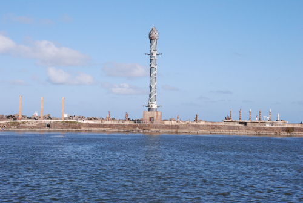
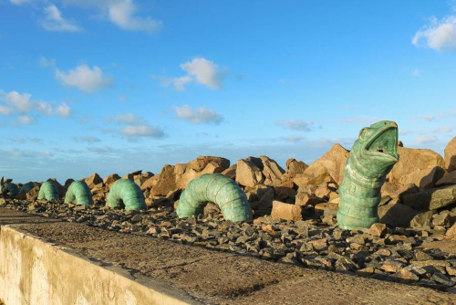
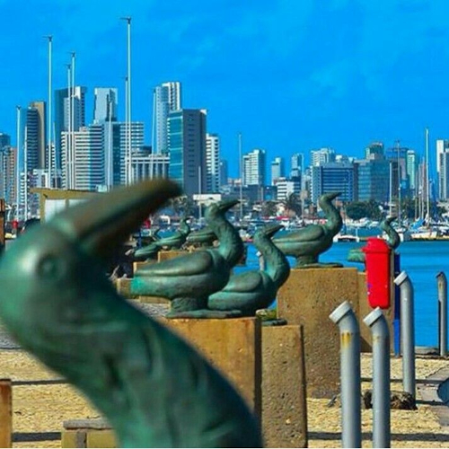

Parque das Esculturas Francisco Brennand
O Parque das Esculturas Francisco Brennand é um museu de arte a céu aberto localizado na cidade do Recife, capital do estado brasileiro de Pernambuco. Constitui um dos principais feitos do artista plástico pernambucano Francisco Brennand.
História:
Idealizado na década de 1990 como parte do projeto “Eu vi o mundo… Ele Começava no Recife” para comemoração dos 500 anos do descobrimento do Brasil, o parque foi inaugurado em 29 de dezembro 2000.
Ao total, existem 90 esculturas criadas por Francisco Brennand, sendo a principal obra no complexo a Torre de Cristal, com 32 metros de altura e confeccionada em argila e bronze.

Apesar de ser um dos principais pontos turísticos de Recife, em pesquisa ao Jornal do Comércio feito em 2018, compreendeu que mais da metade da população não conhece o parque.
No ano de 2014, todas as obras foram restauradas, assim como o parque, além do recebimento de reforço na segurança do complexo.
Passeio:
O parque apresenta belíssimas obras, com vista privilegiada ao Centro histórico do Recife, com o cais José Estelita, pontes, o porto do Recife, os armazéns do porto, a praça do Marco Zero e os prédios históricos da cidade, além do Farol do Recife.
A recomendação é ir ao pôr-do-sol e não tardar na região, dado que não há bom policiamento e nem boa iluminação. De preferência vá em grupo, ou se for sozinho procure ir num horário de maior pico de pessoas, ou seja durante a manhã ou no início da tarde.
Se não conhece esse parque, não pode deixar de incluir no seu roteiro de visita ao Recife.
Referências: